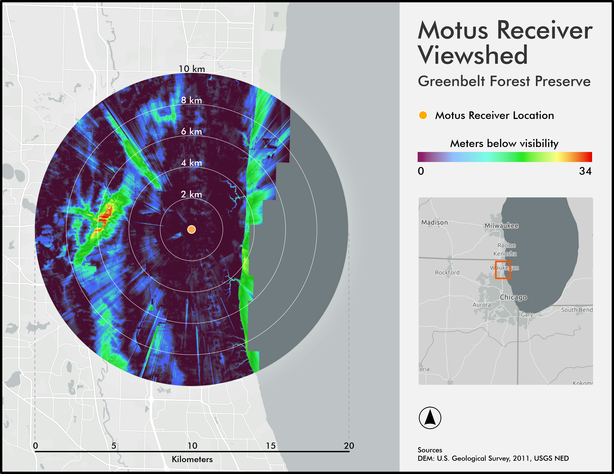

The Motus Wildlife Tracking System (Motus) is a network of radio telemetry stations that aids migratory animal research. Animals fastened with transmitters are detected and recorded when they come within range (typically 10-15 km) of a receiving station. Motus is a collaborative project, and stations are constructed and managed independently by various organizations.
Through funding from the Illinois Department of Natural Resources, Audubon Great Lakes sought to build two Motus receiving stations in the Chicago area to help fill in gaps along the Mississippi Flyway, a critical path for migrating birds.
I created these two maps as part of a site assessment of one of the proposed locations. This involved reviewing the receiver's extent range (in this case, 10 km) to ensure optimal placement relative to existing stations and performing a viewshed analysis to identify potential areas of obstruction.
The planned Motus receivers has a range of approximately 10 kilometers. This map displays the coverage at two kilometer increments for the proposed location.
I used a digital elevation model dataset to perform a viewshed analysis to identify potential signal obstructions and evaluate site viability. This map displays the height in meters birds would need to ascend to reach the elevation of the Motus receiver and be detected.